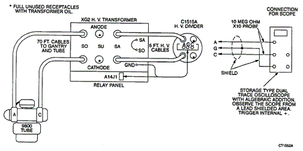
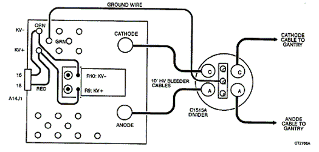

Operating Documentation
Direction 5112972-800, Rev# 2
CT Planned Maintenance Procedures
Operating Documentation |
| Required Persons | Preliminary Reqs | Procedure | Finalization |
|---|---|---|---|
| 1 | Timing Not Applicable | 30 mins | Timing Not Applicable |
Procedure Effectivity:
| Assembly: | GENERATOR |
| Subassembly: | Transformer |
| Purpose: | Check mA and kV Meter Accuracy |
| Last Revised: | July 1995 |
| Item | Qty | Effectivity | Part# | Manufacturer | |
|---|---|---|---|---|---|
| HV Bleeder | 1 | - | - | - | |
| Item | Qty | Effectivity | Part# | Manufacturer |
|---|---|---|---|---|
| Insulating Oil | - | T0552G | - |
Turn off x-ray drives at REM.
Install external HV divider:
(For MPX 125 Transformer - Model #46-146958G3) The bleeder should be installed in parallel in the “SA" wells. Remove wires from terminal “SA" on transformer if this is not already done. Jumper “SO" terminal to “SA" to engage the proper HV tube select switches inside of the transformer. Make sure 13 CC of insulating oil (T0552G) are placed in the SA anode and SA cathode wells before you install the bleeder cables. After the bleeder is removed, fill these wells at least 1/2 full of insulating oil to prevent arching if the HV tube select switches are accidently engaged. Connect the 46-229856G1 kV meter cable to bleeder as shown in Illustration 1.
Illustration 1: MPX 125 KW Transformer/Divider Setup

| The HV Divider was not designed for continuous operation, and therefore, should be disconnected from the system during customer operation. Failure to obey this Warning will result in a defective Divider, which can cause system problems (e.g. generator overloads, scan aborts, SARC faults, etc.). | |
(For MPX 80 KW Transformer - Model #46-266668G1) The bleeder should be installed in series. With x-ray drives off, remove anode and cathode cables at transformer which come from the gantry and install them in one set of 10 foot HV bleeder anode and cathode wells Install bleeder cables into the same transformer wells from which you just removed the HV cables coming from the gantry. The other end of the bleeder cables should be in the remaining bleeder wells. Be sure to connect anode to anode and cathode to cathode. Use HV spanner wrench to tighten all connections. All wells should contain insulating oil. See Illustration 2.
Illustration 2: MPX 80 KW Transformer/Divider Setup

Connect DVM across bleeder output, “+" to anode, “-" to cathode. Set to read on 200 volt scale.
Turn power on.
Perform exposure at 80 kV/100 mA, 120 kV/100 mA, 140 kV/100 mA, 4 seconds each (see NOTE below).
| NOTE: | These exposures are most easily performed from Gencal program
in CTDS.
|
Read the DVM after the reading has stabilized. Verify that the reading is within 2 kV of the indicated kV value on the Gantry display.
Turn the x-ray drives off. Set DVM to DC mA, 200 mA range. Remove the two wires from the “mA +" lead on the XFMR. Connect one lead of the DVM to the 2 wires. Connect the other lead of the DVM to the “mA +" terminal.
Turn power on.
Perform an exposure at 80 kV/200 mA/4 sec (see NOTE below). Wait for mA meter reading to stabilize, then compare it to Gantry display reading at end of exposure. mA readings should be the same within 2 mA.
| NOTE: | These exposures are most easily performed from Gencal program
in CTDS.
|
Turn power off, remove all test equipment and restore to original condition. Make sure all open XFMR wells have enough oil (1/2 full minimum). Be sure pins on anode and cathode are spread properly and are tightened down. If the site has an external bleeder that remains connected all the time, verify that the bleeder switch is off or that the jumper between SO and SA is disconnected. (This applies to 46-146958G3 XFMR only).
Replace all covers.
Verify system scans properly.